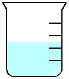
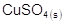

8. In the laboratory a student prepared two
aqueous copper sulphate, , solutions. This was done by dissolving different amounts of
into equal amounts of
water at the same temperature. Both solutions were stirred and left for an hour
before observations were recorded in the table below.
Observation Table
|
Beaker 1  |
Beaker 2 |
|
· a
light blue colour solution · no
 present |
· a
darker blue colour solution · a
small amount of present at the
bottom of the beaker |
Which of the following
statements is TRUE?
A) Neither of the aqueous solutions in the
beakers are in a state of dynamic equilibrium because they are not closed systems.
B) The aqueous solution in beaker 2 is in
a state of dynamic equilibrium because it is a saturated solution.
C) The aqueous solutions in both beakers are in
a state of dynamic equilibrium because the colour of the solution is blue in
both beakers.
D) The aqueous solutions in both beakers are
in a state of dynamic equilibrium because the concentration of is constant.